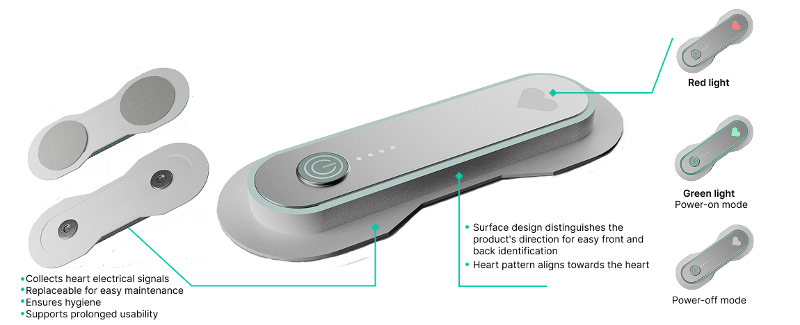
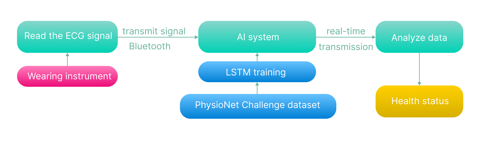
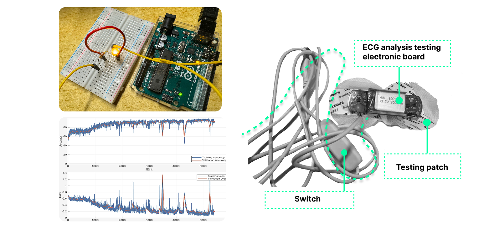

Health Technology · Wearable Sensing
SafeBeat
A wearable ECG monitoring concept that translates continuous physiological signals into calm, interpretable feedback for older adults living alone.

Challenge
Continuous sensing is only useful when people can understand the result without unnecessary alarm.
SafeBeat asks how a wearable system might detect rhythm changes while communicating uncertainty and signal quality in a form suitable for everyday use.
Low burden
The wearable should require little setup during routine use.
Interpretable
Status feedback should explain what the user can do next.
Trustworthy
Motion, poor contact, and uncertain readings must be handled visibly.
Prototype
The concept links a body-worn sensor, a signal-processing pipeline, and a restrained feedback language.
Green communicates a stable reading, orange requests a re-check, and red identifies a warning that should prompt rest and further guidance. The goal is to support an informed response rather than present a diagnosis.
Stable
Continue normally while monitoring remains active.
Re-check
Adjust contact or reduce movement before reading again.
Warning
Pause activity and seek appropriate guidance.
System flow
The pipeline separates raw acquisition from interpretation so that signal quality can be evaluated before status feedback is shown.

Outcome & limitations
The project produced a wearable concept, an electronics demonstration, and a software pipeline for acquiring, visualizing, and screening ECG signals.
Future evaluation should measure false alarms, latency, motion artifacts, and usability with older adults. SafeBeat remains a design and engineering prototype; it has not been validated as a medical device.

Scope note. The interface explores how to communicate a screening result. It does not provide a clinical diagnosis.